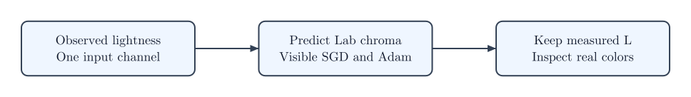
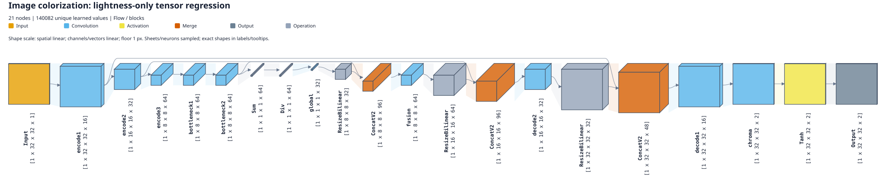
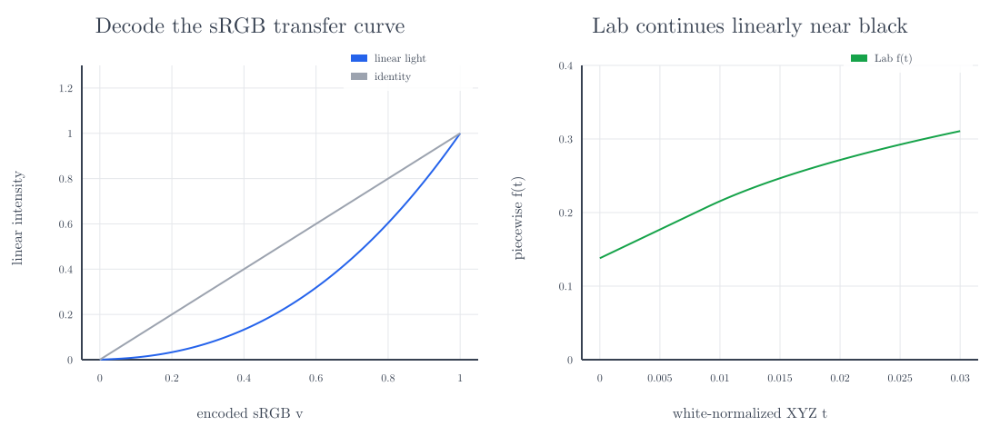
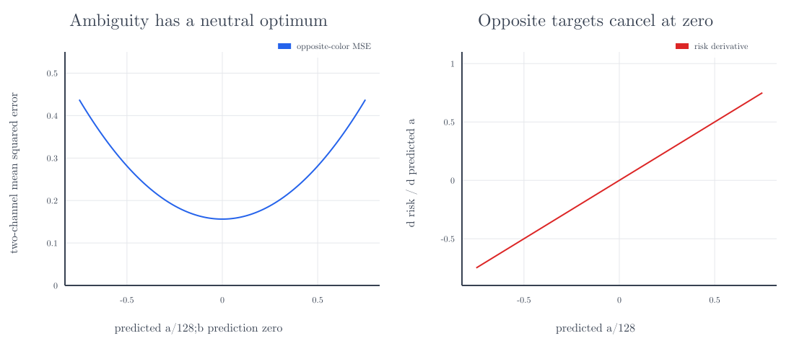
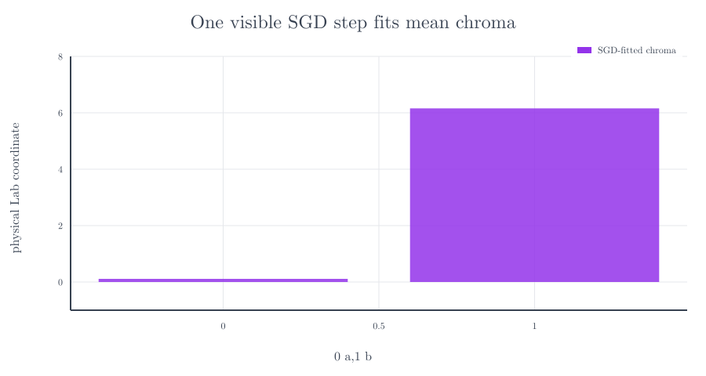
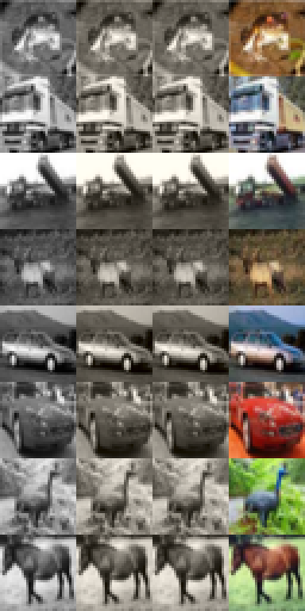
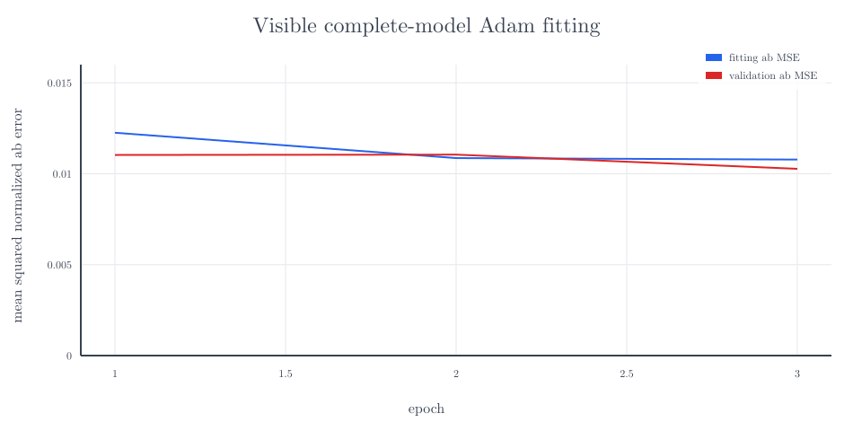
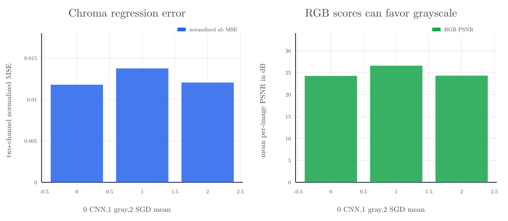
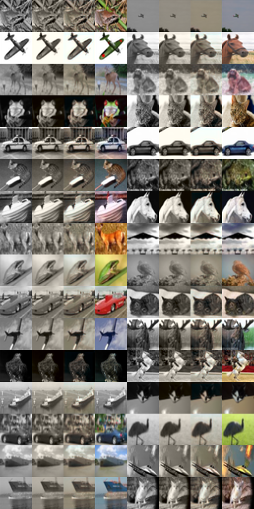

Image colorization: lightness-only tensor regression
Abstract
Lightness alone cannot uniquely determine an image’s colors. This example predicts Lab chroma while preserving measured lightness,starting with physical color transforms and a hand-checkable ambiguous-color regression. Actual CIFAR images,explicit SGD/Adam fits and lightness-only restored deployment expose the limits of short squared-error training.
Source example: examples/cpp/source/nn/1_convolutional_neural_networks/1.8_other_vision_tasks/image_colorization.cpp.
The method
Given normalized lightness L/50-1,the model predicts tanh(a/128,b/128). An encoder-decoder combines spatial skips and global context,then minimizes mean squared chroma error. Targets supervise fitting but never enter inference. Color transforms and metrics retain D65/2degree Lab conventions;RGB clipping is reserved for display and its declared reconstruction metric.
The concept diagram below is drawn by dm::graphics::Diagram. Its editable C++
source is the complete block below; regeneration uses the same datamunge toolchain
as the numerical examples. Exports consume the saved local SVG.
#include <dm/dm.hpp>
int main() {
std::filesystem::create_directories("build");
dm::graphics::Diagram diagram;
diagram.node("n0", {0.0, 0}, "Observed lightness\nOne input channel");
diagram.node("n1", {5.2, 0}, "Predict Lab chroma\nVisible SGD and Adam");
diagram.node("n2", {10.4, 0}, "Keep measured L\nInspect real colors");
diagram.edge("n0", "n1").edge("n1", "n2");
diagram.save_svg("build/image_colorization_concept.svg");
}
Executed tensor architecture
This figure executes the inference configuration shown in the code, using a zero-valued shape probe without fitting or loading a checkpoint. Named stage boundaries group whole subgraphs where available; other nodes retain functional-layer detail. Exact batch-inclusive shapes and reachable parameter totals come from the trace. Shared linear scales map spatial dimensions and channel counts to blocks; the one-pixel visibility floor is disclosed in the legend. Labels use compact monospace text, rotate counterclockwise and sit beside their own glyphs. Arrows flow left to right; wide diagrams scroll at native size on the website.
#include <dm/dm.hpp>
int main() {
namespace n = dm::nn;
namespace m = n::models;
n::set_num_threads(2);
std::filesystem::create_directories("build");
n::ParameterStore p(31);
n::Module architecture_model(
[&](const n::Tensor& image) { return m::Colorization(p, image).chroma; },
"Image colorization: lightness-only tensor regression");
n::ModelPlotOptions options;
options.style = n::ModelPlotStyle::Flow;
options.detail = n::ModelPlotDetail::Blocks;
options.labels = {.type = n::ModelPlotLabel::NameAndShape, .size = 12, .wrap = 24};
options.spacing = {.layer = 24, .lane = 12, .label = 8, .margin = 20};
options.sizing.spatial_size = 96;
options.sizing.channel_size = 42;
options.sizing.minimum_extent = 1;
options.opacity = .8;
const auto diagram = architecture_model.plot(n::zeros({1, 32, 32, 1}), options);
diagram.save_svg("build/image_colorization_architecture.svg");
std::print(
"{} displayed nodes; {} reachable learned values.\n",
diagram.nodes().size(),
diagram.parameter_count());
}21 displayed nodes; 140082 reachable learned values.

Six colors with physical Lab coordinates
D65/2degree CIELAB separates lightness L from opponent a/b chroma. A measured sRGB triple first undergoes inverse gamma,then the published RGB-to-XYZ matrix, D65 white normalization and the piecewise cube-root Lab transform. The inverse retains out-of-gamut sRGB values until presentation clipping. White is not exactly neutral under the rounded published matrix;its tiny a/b values remain visible in the table. The model sees L/50-1 and predicts(a,b)/128.
#include <dm/dm.hpp>
int main() {
namespace n = dm::nn;
namespace m = n::models;
const auto rgb = n::from_vector(
std::vector<double>{0, 0, 0, 1, 1, 1, 1, 0, 0, 0, 1, 0, 0, 0, 1, .5, .5, .5}, {6, 3});
const auto lab = m::ColorRGBToLabTensor(rgb), back = m::ColorLabToRGBTensor(lab);
const auto values = lab.to_vector<double>();
const std::vector<std::string> names = {"black", "white", "red",
"green", "blue", "half gray"};
std::print("| sRGB | L | a | b |\n|---|---:|---:|---:|\n");
for (int i = 0; i < 6; ++i)
std::print("| {} | {:.8f} | {:.8f} | {:.8f} |\n", names[i], values[i * 3],
values[i * 3 + 1], values[i * 3 + 2]);
const double error = n::max(n::abs(back - rgb)).item();
if (error > 1e-12)
return 1;
std::filesystem::create_directories("build");
const auto swatches =
n::ones({6, 32, 32, 3}) * rgb.to(n::DType::Float32).reshape({6, 1, 1, 3});
n::save_image_grid(swatches, "build/image_colorization_colors.png", 6, 0, 1, 2, 0, 3);
std::print("RGB->Lab->RGB maximum error {:.3g};swatch order matches the table.\n", error);
}| sRGB | L | a | b |
|---|---|---|---|
| black | 0.00000000 | 0.00000000 | 0.00000000 |
| white | 100.00000000 | -0.00245494 | 0.00465342 |
| red | 53.24058794 | 80.09230823 | 67.20275104 |
| green | 87.73509949 | -86.18302974 | 83.17970318 |
| blue | 32.29567257 | 79.18559091 | -107.85730021 |
| half gray | 53.38896474 | -0.00146850 | 0.00278359 |
RGB->Lab->RGB maximum error 3.79e-15;swatch order matches the table.
Piecewise transforms and their knees
Inverse sRGB gamma uses v/12.92 below .04045 and \(((v+.055)/1.055)^{2.4}\) above it. Lab uses \(f(t)=t^{1/3}\) above \((6/29)^3\),otherwise \(f(t)=t/[3(6/29)^2]+4/29\). Linear continuations avoid singular behavior near black. Color operations use Float64;the prepared neural-network inputs cast once to Float32. Native independent fixtures test both branches and knees.
#include <dm/dm.hpp>
int main() {
namespace n = dm::nn;
namespace m = n::models;
const auto x = n::arange(0., 1.001, .001, n::DType::Float64),
small = n::arange(0., .03001, .0001, n::DType::Float64);
auto a = dm::graphics::RPlot::create(), b = dm::graphics::RPlot::create();
a.lines(x.to_vector<double>(), m::ColorLinearTensor(x).to_vector<double>(), "linear light",
{37, 99, 235})
.lines(x.to_vector<double>(), x.to_vector<double>(), "identity", {156, 163, 175})
.title("Decode the sRGB transfer curve")
.x_label("encoded sRGB v")
.y_label("linear intensity")
.y_limits(0, 1.3);
b.lines(small.to_vector<double>(), m::ColorLabFTensor(small).to_vector<double>(), "Lab f(t)",
{22, 163, 74})
.title("Lab continues linearly near black")
.x_label("white-normalized XYZ t")
.y_label("piecewise f(t)")
.y_limits(0, .4);
std::filesystem::create_directories("build");
auto layout = dm::graphics::RLayout::create(1, 2);
layout.add(a).add(b).size(1100, 480).fit_panels().save_svg(
"build/image_colorization_transfers.svg");
std::print("sRGB decode(.04045)={:.9f};Lab knee t={:.9f},f(t)={:.9f}.\n",
m::ColorLinear(.04045), std::pow(6. / 29, 3), m::ColorLabF(std::pow(6. / 29, 3)));
}sRGB decode(.04045)=0.003130805;Lab knee t=0.008856452,f(t)=0.206896552.

Identical lightness can imply opposite colors
Suppose the same lightness is paired with normalized chroma(.25,.5) and
(.25,.5). A shared prediction q minimizes the average squared residual.
For each coordinate its optimum is the conditional mean,here zero. The loss
at zero is .15625 and its gradient is exactly zero. This is an irreducible
ambiguity in the observation,not a missing optimizer step. Squared-error
regression can therefore desaturate colors even when fitting succeeds.
#include <dm/dm.hpp>
int main() {
namespace n = dm::nn;
namespace m = n::models;
const auto target = n::tensor({.25, -.5, -.25, .5}, {2, 1, 1, 2});
auto neutral = n::zeros({1, 1, 1, 2}).requires_grad_();
const auto loss = m::ColorizationLoss(n::tile(neutral, {2, 1, 1, 1}), target);
const auto gradient = n::grad(loss, {neutral})[0];
const auto q = n::arange(-.75, .7501, .01, n::DType::Float64);
const auto risk = ((n::square(q - .25) + n::square(q + .25)) * .5 + .25) * .5;
auto a = dm::graphics::RPlot::create(), b = dm::graphics::RPlot::create();
a.lines(q.to_vector<double>(), risk.to_vector<double>(), "opposite-color MSE", {37, 99, 235})
.title("Ambiguity has a neutral optimum")
.x_label("predicted a/128;b prediction zero")
.y_label("two-channel mean squared error")
.y_limits(0, .55);
b.lines(q.to_vector<double>(), q.to_vector<double>(), "risk derivative", {220, 38, 38})
.title("Opposite targets cancel at zero")
.x_label("predicted a/128")
.y_label("d risk / d predicted a")
.y_limits(-.9, 1.1);
std::filesystem::create_directories("build");
auto layout = dm::graphics::RLayout::create(1, 2);
layout.add(a).add(b).size(1100, 480).fit_panels().save_svg(
"build/image_colorization_ambiguity.svg");
std::print("Shared neutral loss {:.5f};max gradient {:.3g}.\n", loss.item(),
n::max(n::abs(gradient)).item());
if (loss.item() != .15625 || n::max(n::abs(gradient)).item() != 0)
return 1;
}Shared neutral loss 0.15625;max gradient 0.

Complete encoder,global context and spatial skips
Ten learned convolutions retain the source architecture. After two stride2 reductions,the context branch pools globally and projects to32 channels. Bilinear resizing broadcasts this context back into spatial fusion. Two skip-connected decoder levels recover the original image size and a final biased1x1/tanh predicts two chroma channels. Half-pixel bilinear geometry preserves odd rectangular inputs too;there is no BN state or color shortcut.
#include <dm/dm.hpp>
int main() {
namespace n = dm::nn;
namespace m = n::models;
n::set_num_threads(2);
n::ParameterStore p(31);
const auto lightness = (.8 * n::sin(n::arange(0, 2 * 33 * 35, 1, n::DType::Float64) * .17))
.to(n::DType::Float32)
.reshape({2, 33, 35, 1})
.requires_grad_();
const auto target = (.3 * n::cos(n::arange(0, 2 * 33 * 35 * 2, 1, n::DType::Float64) * .13))
.to(n::DType::Float32)
.reshape({2, 33, 35, 2});
const auto out = m::Colorization(p, lightness);
const auto loss = m::ColorizationLoss(out.chroma, target);
auto leaves = p.parameters();
leaves.push_back(lightness);
const auto gradient = n::grad(loss, leaves);
double minimum = INFINITY;
for (const auto &g : gradient) {
if (!n::all(n::less(n::abs(g), INFINITY)).item<bool>())
return 1;
minimum = std::min(minimum, n::sqrt(n::sum(n::square(g.to(n::DType::Float64)))).item());
}
if (minimum <= 0 || p.count() != 140082 || p.size() != 20)
return 1;
std::print(
"140082 learned scalars/20 tensors;all20 plus lightness gradients finite/nonzero,min "
"norm {:.3g}.\n| stage | height | width | channels |\n|---:|---:|---:|---:|\n",
minimum);
for (std::size_t i = 0; i < out.stages.size(); ++i) {
const auto &v = out.stages[i];
std::print("| {} | {} | {} | {} |\n", i + 1, v.size(1), v.size(2), v.size(3));
}
}140082 learned scalars/20 tensors;all20 plus lightness gradients finite/nonzero,min norm 0.00175.
| stage | height | width | channels |
|---|---|---|---|
| 1 | 33 | 35 | 16 |
| 2 | 17 | 18 | 32 |
| 3 | 9 | 9 | 64 |
| 4 | 9 | 9 | 64 |
| 5 | 9 | 9 | 64 |
| 6 | 1 | 1 | 32 |
| 7 | 9 | 9 | 64 |
| 8 | 17 | 18 | 32 |
| 9 | 33 | 35 | 16 |
| 10 | 33 | 35 | 2 |
Real images and a visible SGD constant-chroma fit
CIFAR fitting rows0–255 and validation256–287 come from the first official
training binary;held-out images are official-test rows96–127. Read the existing
DATAMUNGE_DATA_DIR/cifar10 or standard XDG/home dataset cache. Original32px
RGB is converted to Lab without cropping,augmentation or class-label inputs.
A constant two-coordinate chroma is a fitted baseline. To show its optimization, minimize the *sum of the two coordinate MSEs*. Its gradient is2(q-mean); one explicit SGD step with learning rate .5 from zero reaches the mean. The tensor mean helper is only an independent closed-form check. The saved fitted tensor is later used unchanged on validation and test images.
#include <dm/dm.hpp>
int main() {
namespace n = dm::nn;
namespace m = n::models;
n::set_num_threads(2);
std::filesystem::path cache;
if (const auto *p = std::getenv("DATAMUNGE_DATA_DIR"))
cache = p;
else if (const auto *p = std::getenv("XDG_CACHE_HOME"))
cache = std::filesystem::path(p) / "datamunge/datasets";
else
cache = std::filesystem::path(std::getenv("HOME")) / ".cache/datamunge/datasets";
dm::datasets::fetch("cifar10", (cache / "cifar10").string());
const auto raw =
n::data::LoadCifar({cache / "cifar10/data_batch_1.bin"}, n::data::Cifar::k10),
testing =
n::data::LoadCifar({cache / "cifar10/test_batch.bin"}, n::data::Cifar::k10);
std::vector<std::size_t> fi(256), vi(32), ti(32);
std::iota(fi.begin(), fi.end(), 0);
std::iota(vi.begin(), vi.end(), 256);
std::iota(ti.begin(), ti.end(), 96);
const auto fit = m::ColorPairs(raw.images, fi), validation = m::ColorPairs(raw.images, vi),
test = m::ColorPairs(testing.images, ti);
n::ParameterStore prior(41, n::DType::Float64);
const auto q = prior.get("chroma", {2}, n::init::zeros());
n::OptimizerConfig config;
config.kind = n::OptimizerKind::Sgd;
n::Optimizer sgd(prior, .5, config);
const auto target = fit.chroma.to(n::DType::Float64);
for (int step = 0; step < 1; ++step) {
const auto loss = n::sum(n::mean(n::square(q.reshape({1, 1, 1, 2}) - target), {0, 1, 2}));
sgd.minimize(loss);
}
const auto fitted = q.detach().to(n::DType::Float32);
const auto closed = m::ColorMeanChroma(fit);
const auto expected =
n::from_vector(std::vector<double>{closed[0], closed[1]}, {2}).to(n::DType::Float32);
const double error = n::max(n::abs(fitted - expected)).item();
if (error > 1e-8)
return 1;
const auto gray = m::ScoreTensorColor(fit, n::zeros_like(fit.chroma));
const auto mean =
m::ScoreTensorColor(fit, n::ones(fit.chroma.shape()) * fitted.reshape({1, 1, 1, 2}));
const m::ColorData first{m::ColorBatch(fit.lightness, {0, 1, 2, 3, 4, 5, 6, 7}),
m::ColorBatch(fit.chroma, {0, 1, 2, 3, 4, 5, 6, 7}),
m::ColorBatch(fit.rgb, {0, 1, 2, 3, 4, 5, 6, 7})};
std::filesystem::create_directories("build");
std::filesystem::create_directories("figures");
n::save_npz("build/image_colorization_prior.npz", {{"chroma", fitted}});
n::save_image_grid(m::ColorPreviewTiles(first,
m::ColorBatch(mean.rgb, {0, 1, 2, 3, 4, 5, 6, 7}),
m::ColorBatch(gray.rgb, {0, 1, 2, 3, 4, 5, 6, 7}),
m::ColorBatch(mean.rgb, {0, 1, 2, 3, 4, 5, 6, 7})),
"build/image_colorization_inputs.png", 1, 0, 1, 0, 0, 3);
auto p = dm::graphics::RPlot::create();
p.bars({0., 1.}, (128. * fitted).to_vector<double>(), "SGD-fitted chroma", {147, 51, 234})
.title("One visible SGD step fits mean chroma")
.x_label("0 a,1 b")
.y_label("physical Lab coordinate")
.y_limits(-1, 8)
.size(900, 480);
p.save_svg("build/image_colorization_prior.svg");
std::print("Fit/validation/test images {}/{}/{};one explicit SGD(.5) update,mean parity "
"{:.3g};physical a/b {:.6f}/{:.6f}.\n",
fit.rgb.size(0), validation.rgb.size(0), test.rgb.size(0), error,
128 * fitted.to_vector<double>()[0], 128 * fitted.to_vector<double>()[1]);
}Fit/validation/test images 256/32/32;one explicit SGD(.5) update,mean parity 0;physical a/b 0.111270/6.156950.


Complete-model Adam and lightness-only deployment
The CNN minimizes mean squared normalized ab residuals over all image,pixel and two-channel entries. Warm all20 learned leaves,then use Adam(.001),batch8, three epochs and the source seeded batch order. Validation chroma MSE selects the checkpoint. Restore independent inference parameters and supply only L; there are no targets,labels,optimizer or extra color inputs in its forward call.
RGB scores decode the given lightness and predicted ab. Report normalized ab MSE,mean DeltaE76,mean per-image RGB PSNR,mean physical chroma and raw out-of-gamut *pixel* fraction. Only decoded RGB is clipped for PSNR/display. Gray has no fitted parameters;the other baseline loads the earlier SGD result.
#include <dm/dm.hpp>
int main() {
namespace n = dm::nn;
namespace m = n::models;
n::set_num_threads(2);
std::filesystem::path cache;
if (const auto *p = std::getenv("DATAMUNGE_DATA_DIR"))
cache = p;
else if (const auto *p = std::getenv("XDG_CACHE_HOME"))
cache = std::filesystem::path(p) / "datamunge/datasets";
else
cache = std::filesystem::path(std::getenv("HOME")) / ".cache/datamunge/datasets";
dm::datasets::fetch("cifar10", (cache / "cifar10").string());
const auto raw =
n::data::LoadCifar({cache / "cifar10/data_batch_1.bin"}, n::data::Cifar::k10),
testing =
n::data::LoadCifar({cache / "cifar10/test_batch.bin"}, n::data::Cifar::k10);
std::vector<std::size_t> fi(256), vi(32), ti(32);
std::iota(fi.begin(), fi.end(), 0);
std::iota(vi.begin(), vi.end(), 256);
std::iota(ti.begin(), ti.end(), 96);
const auto fit = m::ColorPairs(raw.images, fi), validation = m::ColorPairs(raw.images, vi),
test = m::ColorPairs(testing.images, ti);
n::ParameterStore p(31);
{
n::NoGradGuard guard;
m::Colorization(p, n::zeros({1, 32, 32, 1}));
}
n::OptimizerConfig opt;
opt.kind = n::OptimizerKind::Adam;
n::Optimizer adam(p, .001, opt);
auto predict = [](n::ParameterStore &store, const n::Tensor &lightness) {
n::NoGradGuard guard;
std::vector<n::Tensor> parts;
for (std::int64_t i = 0; i < lightness.size(0); i += 8)
parts.push_back(m::Colorization(store, n::slice_axis(lightness, 0, i,
std::min(i + 8, lightness.size(0))))
.chroma);
return n::concat(parts, 0);
};
const auto probe_l = m::ColorBatch(fit.lightness, {0, 1, 2, 3, 4, 5, 6, 7}),
probe_ab = m::ColorBatch(fit.chroma, {0, 1, 2, 3, 4, 5, 6, 7});
const double initial = m::ColorizationLoss(predict(p, probe_l), probe_ab).item();
n::BatchOrder order(256, 8, 37);
std::vector<double> epochs, training, valid;
double best = INFINITY;
int selected = 0, updates = 0;
std::filesystem::create_directories("build");
std::filesystem::create_directories("figures");
std::print("140082 learned scalars/20 warmed tensors.\n| epoch | fitting ab MSE | "
"validation ab MSE |\n|---:|---:|---:|\n");
for (int epoch = 1; epoch <= 3; ++epoch) {
order.begin_epoch();
double total = 0;
int seen = 0;
for (auto ids = order.next(); !ids.empty(); ids = order.next()) {
const std::vector<std::size_t> rows(ids.begin(), ids.end());
const auto lightness = m::ColorBatch(fit.lightness, rows),
truth = m::ColorBatch(fit.chroma, rows);
const auto prediction = m::Colorization(p, lightness).chroma;
const auto loss = m::ColorizationLoss(prediction, truth);
if (!std::isfinite(loss.item()))
return 1;
total += loss.item() * rows.size();
seen += rows.size();
adam.minimize(loss);
++updates;
}
if (seen != 256)
return 1;
epochs.push_back(epoch);
training.push_back(total / seen);
valid.push_back(
m::ColorizationLoss(predict(p, validation.lightness), validation.chroma).item());
if (valid.back() < best) {
best = valid.back();
selected = epoch;
p.save("build/image_colorization_best.npz");
}
std::print("| {} | {:.6f} | {:.6f} |\n", epoch, training.back(), valid.back());
}
p.load("build/image_colorization_best.npz");
const double restored =
m::ColorizationLoss(predict(p, validation.lightness), validation.chroma)
.item(),
learned = m::ColorizationLoss(predict(p, probe_l), probe_ab).item();
if (std::abs(restored - best) > 1e-8 || learned >= initial ||
training.back() >= training.front())
return 1;
n::ParameterStore deployed(991);
{
n::NoGradGuard guard;
m::Colorization(deployed, n::zeros({1, 32, 32, 1}));
}
deployed.load("build/image_colorization_best.npz");
std::vector<n::Tensor> snapshot;
for (const auto &v : deployed.parameters())
snapshot.push_back(v.clone());
const auto prediction = predict(deployed, test.lightness),
reference = predict(p, test.lightness),
repeat = predict(deployed, test.lightness);
const double parity = n::max(n::abs(prediction - reference)).item();
if (parity > 1e-7 || !n::all(n::equal(prediction, repeat)).item<bool>())
return 1;
const auto single = predict(deployed, m::ColorBatch(test.lightness, {3}));
if (n::max(n::abs(single - n::slice_axis(prediction, 0, 3, 4))).item() > 1e-6)
return 1;
for (std::size_t i = 0; i < snapshot.size(); ++i)
if (!n::all(n::equal(snapshot[i], deployed.parameters()[i])).item<bool>())
return 1;
const double variation =
n::mean(n::abs(n::select(prediction, 0, 0) - n::select(prediction, 0, 1))).item();
if (variation <= 1e-6)
return 1;
const auto fitted = n::load_npz("build/image_colorization_prior.npz").at(0).second;
const auto mean = n::ones(test.chroma.shape()) * fitted.reshape({1, 1, 1, 2});
const auto score = m::ScoreTensorColor(test, prediction),
gray = m::ScoreTensorColor(test, n::zeros_like(test.chroma)),
prior = m::ScoreTensorColor(test, mean);
std::print("{} visible Adam updates;selected epoch{},restored validation {:.6f};fixed "
"fitting {:.6f}->{:.6f}.\nLightness-only deployment parity {:.3g},all20 tensors "
"immutable,repeat exact,single/batch agree;image-pair chroma difference "
"{:.6f}.\n| model | ab MSE | DeltaE76 | RGB PSNR dB | mean chroma | gamut pixel "
"fraction |\n|---|---:|---:|---:|---:|---:|\n",
updates, selected, restored, initial, learned, parity, variation);
for (const auto &item : std::vector<std::pair<std::string, m::TensorColorMetrics>>{
{"learned", score}, {"grayscale", gray}, {"SGD mean", prior}})
std::print("| {} | {:.6f} | {:.6f} | {:.6f} | {:.6f} | {:.6f} |\n", item.first,
item.second.ab_mse.item(), item.second.delta_e76.item(),
item.second.rgb_psnr.item(), item.second.chroma.item(),
item.second.clipped_pixels.item());
n::save_image_grid(m::ColorPreviewTiles(test, score.rgb, gray.rgb, prior.rgb),
"build/image_colorization_predictions.png", 2, 0, 1, 0, 0, 3);
n::save_npz("build/image_colorization_test.npz", {{"lightness", test.lightness},
{"predicted_chroma", prediction},
{"rgb", score.rgb},
{"target_rgb", test.rgb}});
auto a = dm::graphics::RPlot::create(), b = dm::graphics::RPlot::create();
a.bars({0., 1., 2.}, {score.ab_mse.item(), gray.ab_mse.item(), prior.ab_mse.item()},
"normalized ab MSE", {37, 99, 235})
.title("Chroma regression error")
.x_label("0 CNN,1 gray,2 SGD mean")
.y_label("two-channel normalized MSE")
.y_limits(0, .018);
b.bars({0., 1., 2.}, {score.rgb_psnr.item(), gray.rgb_psnr.item(), prior.rgb_psnr.item()},
"RGB PSNR", {22, 163, 74})
.title("RGB scores can favor grayscale")
.x_label("0 CNN,1 gray,2 SGD mean")
.y_label("mean per-image PSNR in dB")
.y_limits(0, 34);
auto metrics = dm::graphics::RLayout::create(1, 2);
metrics.add(a).add(b).size(1100, 480).fit_panels().save_svg(
"build/image_colorization_metrics.svg");
std::filesystem::copy_file("build/image_colorization_metrics.svg",
"figures/image_colorization_metrics.svg",
std::filesystem::copy_options::overwrite_existing);
a = dm::graphics::RPlot::create();
a.lines(epochs, training, "fitting ab MSE", {37, 99, 235})
.lines(epochs, valid, "validation ab MSE", {220, 38, 38})
.title("Visible complete-model Adam fitting")
.x_label("epoch")
.y_label("mean squared normalized ab error")
.y_limits(0, .016)
.size(950, 480);
a.save_svg("build/image_colorization_training.svg");
}140082 learned scalars/20 warmed tensors.
| epoch | fitting ab MSE | validation ab MSE |
|---|---|---|
| 1 | 0.012254 | 0.011034 |
| 2 | 0.010862 | 0.011051 |
| 3 | 0.010780 | 0.010270 |
96 visible Adam updates;selected epoch3,restored validation 0.010270;fixed fitting 0.033218->0.019443. Lightness-only deployment parity 0,all20 tensors immutable,repeat exact,single/batch agree;image-pair chroma difference 0.016750.
| model | ab MSE | DeltaE76 | RGB PSNR dB | mean chroma | gamut pixel fraction |
|---|---|---|---|---|---|
| learned | 0.011777 | 14.956496 | 24.258774 | 7.401264 | 0.064972 |
| grayscale | 0.013745 | 14.588410 | 26.589655 | 0.000000 | 0.017670 |
| SGD mean | 0.012040 | 14.990405 | 24.307004 | 6.157955 | 0.102936 |



The learned model lowers test normalized ab MSE to .011777,compared with .013745 for gray and .012040 for the SGD constant. Gray nevertheless has higher RGB PSNR(26.589655 versus24.258774dB) and lower mean DeltaE76 (14.588410 versus14.956496). The learned output is still weakly colored; its raw decoding places6.4972% of pixels outside the display gamut.
Regression cannot determine a unique color from lightness alone. The small experiment reports its errors and out-of-gamut predictions without claiming plausible semantic color recovery,Zhang-style classification,pretraining or paper benchmark accuracy. More saturated output need not improve RGB scores.
Regenerate adjacent views from this run
#include <dm/dm.hpp>
int main(){std::filesystem::copy_file("build/image_colorization_inputs.png","build/export_image_colorization_inputs.png",std::filesystem::copy_options::overwrite_existing);}#include <dm/dm.hpp>
int main(){std::filesystem::copy_file("build/image_colorization_metrics.svg","build/export_image_colorization_metrics.svg",std::filesystem::copy_options::overwrite_existing);}#include <dm/dm.hpp>
int main(){std::filesystem::copy_file("build/image_colorization_predictions.png","build/export_image_colorization_predictions.png",std::filesystem::copy_options::overwrite_existing);}Conclusion
Physical Lab transforms,branch fixtures and complete Jacobians establish the numeric mechanism. Visible optimizers then fit both a constant reference and every CNN leaf on actual images. Restored lightness-only inference is immutable;the held-out comparisons show ambiguity,desaturation and differences between chroma and RGB error.
References
- [Scikit-image v0.25.2 color conversion implementation](https://github.com/scikit-image/scikit-image/blob/v0.25.2/skimage/color/colorconv.py).